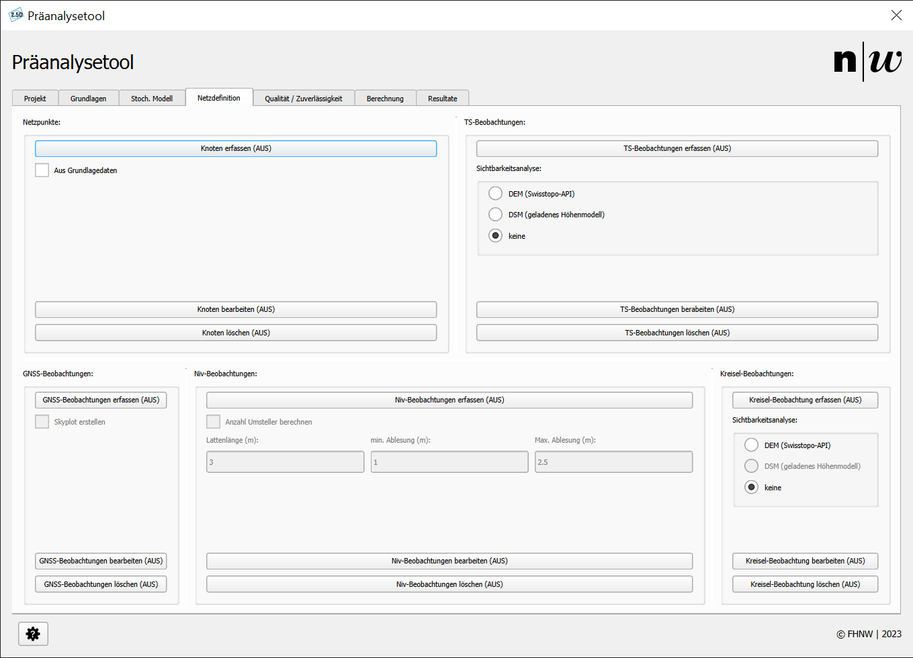
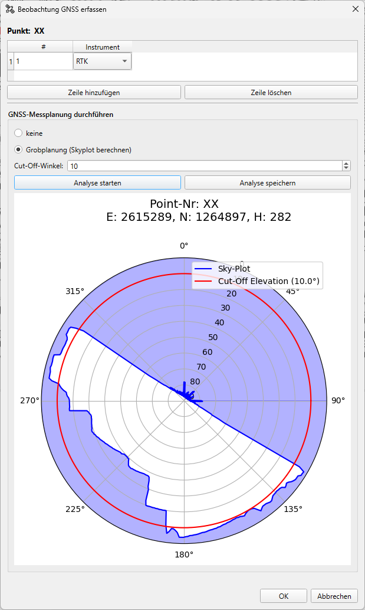

Netzdefinition#
In diesem Register wird die Netzdefinition erstellt. Sämtliche Punkte und Beobachtungen können mit dieser Maske digitalisiert werden. Abbildung 1 zeigt die Registerkarte Netzdefinition.

Abbildung 1: Netzdefinition.
Netzpunkte#
Netzpunkte sind die Punkte, die für die Netzberechnung von Interesse sind – namentlich die Neupunkte sowie die Referenz- bzw. Lagerungspunkte des Netzes.
Knoten erfassen#
Ein Klick auf den Knopf Knoten erfassen aktiviert das Digitalisieren von Netzpunkten in der QGIS-Zeichenoberfläche. Ein weiterer Klick auf den Knopf deaktiviert das Tool.
- Klicken Sie an der gewünschten Position in der QGIS-Zeichenoberfläche.
- Bestätigen Sie das Pop-up.
- Der neue Punkt wird gezeichnet.
Aus Grundlagedaten#
Der Bereich Aus Grundlagedaten wechselt das Werkzeug zur Punkterfassung. Nun können Punkte, die zuvor importiert oder über den WFS heruntergeladen wurden, ausgewählt werden (vgl. Grundlagedaten laden).
- Selektieren Sie einen Punkt aus dem Layer
imported points. - Bestätigen Sie das Pop-up.
- Der neue Punkt wird gezeichnet.
Knoten bearbeiten#
Ein Klick auf den Knopf Knoten bearbeiten aktiviert die Bearbeitung von Netzpunkten in der QGIS-Zeichenoberfläche. Ein weiterer Klick auf den Knopf deaktiviert das Tool.
- Selektieren Sie einen Punkt aus dem Layer
reference_points. - Geben Sie die gewünschten Änderungen ein und bestätigen Sie.
- Der Punkt wird aktualisiert.
Knoten löschen#
Ein Klick auf den Knopf Knoten löschen aktiviert das Löschen von Netzpunkten in der QGIS-Zeichenoberfläche. Ein weiterer Klick auf den Knopf deaktiviert das Tool.
Achtung: Wenn Sie einenen Punkt löschen, an welchem noch Beobachtungen hängen, werden diese Beobachtungen ebenfalls gelöscht.
- Selektieren Sie einen Punkt aus dem Layer
reference_points. - Bestätigen Sie die Löschung.
- Der Punkt wird entfernt.
TS-Beobachtungen#
In diesem Abschnitt des Registers Netzdefinition können Tachymeter-Beobachtungen oder ähnliche Messungen erstellt, bearbeitet und gelöscht werden.
TS-Beobachtungen erfassen#
Ein Klick auf den Knopf TS-Beobachtungen erfassen aktiviert das Digitalisieren von TS-Beobachtungen in der QGIS-Zeichenoberfläche. Ein weiterer Klick auf den Knopf deaktiviert das Tool.
- Selektieren Sie den ersten Punkt der Beobachtung aus dem Layer
reference_points. - Bei jeder Mausbewegung wird das RubberBand aktualisiert, bis Sie den zweiten Punkt aus dem Layer
reference_pointswählen. - Je nach Einstellung wird eine Sichtbarkeitsanalyse durchgeführt.
- Es erscheint ein Pop-up zur Konfiguration der Beobachtung.
- Nach der Bestätigung wird die Beobachtung in der QGIS-Zeichenoberfläche dargestellt.
Sichtbarkeitsanalyse#
Abhängig von den gewählten Einstellungen kann eine Sichtbarkeitsanalyse durchgeführt werden. Folgende Optionen stehen zur Verfügung:
- DEM (Swisstopo-API): Entlang der Beobachtung wird ein Höhenprofil auf Basis des Geländemodells SwissALTI3D abgefragt und mit der Beobachtungshöhe verglichen. Dies erfolgt über eine API von Swisstopo (COGIS o.J.).
- DSM (geladenes Höhenmodell): Entlang der Beobachtung wird ein Höhenprofil auf Basis des geladenen Höhenmodells abgefragt und mit der Beobachtungshöhe verglichen. Diese Berechnung erfolgt lokal auf dem Computer.
- Keine: Es wird keine Sichtbarkeitsanalyse durchgeführt. Diese Option eignet sich für Computer mit geringer Rechenleistung oder bei sehr langen Visuren.
TS-Beobachtungen bearbeiten#
Ein Klick auf den Knopf TS-Beobachtungen bearbeiten aktiviert die Bearbeitung von TS-Beobachtungen in der QGIS-Zeichenoberfläche. Ein weiterer Klick auf den Knopf deaktiviert das Tool.
- Selektieren Sie eine Beobachtung aus dem Layer
ts_observations. - Es erscheint ein Pop-up zur Konfiguration der Beobachtung.
- Nach der Bestätigung wird die Beobachtung in der QGIS-Zeichenoberfläche aktualisiert.
TS-Beobachtungen löschen#
Ein Klick auf den Knopf TS-Beobachtungen löschen aktiviert das Löschen von TS-Beobachtungen in der QGIS-Zeichenoberfläche. Ein weiterer Klick auf den Knopf deaktiviert das Tool.
- Selektieren Sie eine Beobachtung aus dem Layer
ts_observations. - Es erscheint ein Pop-up zur Bestätigung der Löschung.
- Nach der Bestätigung wird die Beobachtung entfernt.
GNSS-Beobachtungen#
In diesem Abschnitt des Registers Netzdefinition können GNSS-Beobachtungen oder ähnliche Messungen erstellt, bearbeitet und gelöscht werden.
GNSS-Beobachtungen erfassen#
Ein Klick auf den Knopf GNSS-Beobachtungen erfassen aktiviert das Digitalisieren von GNSS-Beobachtungen in der QGIS-Zeichenoberfläche. Ein weiterer Klick auf den Knopf deaktiviert das Tool.
- Selektieren Sie den Punkt der Beobachtung aus dem Layer
reference_points. - Es erscheint ein Pop-up zur Konfiguration der Beobachtung.
- Hier können Sie auch einen Skyplot erstellen.
- Nach der Bestätigung wird die Beobachtung in der QGIS-Zeichenoberfläche dargestellt.
Konfiguration der GNSS-Beobachtungen: Bei der Erfassung von GNSS-Beobachtungen (siehe Abb. 2) können Sie sämtliche Sessionen direkt in einer Maske erfassen. Klicken Sie hierzu auf den Button Zeile hinzufügen und wählen Sie aus dem Dropdown in der rechten Spalte das Instrument/die Session aus. Fehlerhaft erfasste Sessionen können über den Button Zeile löschen entfernt werden. Um den Dialog zu bestätigen müssen Sie mindestens eine Session definiert haben.
GNSS-Messplanung durchführen: Seit Version v0.2.0 wird die Grobplanung (Erstellung von Skyplots) für GNSS-Messungen unterstützt. Voraussetzung dafür ist, dass ein Oberflächenmodell als Raster geladen wurde. Wählen Sie für die Erstellung des Skyplots die Option Grobplanung (Skyplot berechnen) aus, stellen Sie den gewünschten Cut-Off-Winkel (in Grad) ein und klicken Sie auf Analyse starten. Es öffnet sich ein Fenster mit einem Fortschrittsbalken. Je nach Ausdehnung des Oberflächenrasters und Rechenkapazität des Computers kann die Bildgenerierung einige Sekunden bis Minuten dauern. Die Analyse kann zur Weiterverwendung in Berichten als PNG gespeichert werden. Klicken Sie dazu auf den Button Analyse speichern und wählen Sie den Speicherort aus. Vergessen Sie am Ende nicht, die Erfassung der Messung mit OK* zu bestätigen.

Abbildung 2: Erfassen einer GNSS-Beobachtung.
GNSS-Beobachtungen bearbeiten#
Ein Klick auf den Knopf GNSS-Beobachtungen bearbeiten aktiviert die Bearbeitung von GNSS-Beobachtungen in der QGIS-Zeichenoberfläche. Ein weiterer Klick auf den Knopf deaktiviert das Tool.
- Selektieren Sie eine Beobachtung aus dem Layer
gnss_observations. - Es erscheint ein Pop-up zur Konfiguration der Beobachtung.
- Nach der Bestätigung wird die Beobachtung in der QGIS-Zeichenoberfläche aktualisiert.
GNSS-Beobachtungen löschen#
Ein Klick auf den Knopf GNSS-Beobachtungen löschen aktiviert das Löschen von GNSS-Beobachtungen in der QGIS-Zeichenoberfläche. Ein weiterer Klick auf den Knopf deaktiviert das Tool.
- Selektieren Sie eine Beobachtung aus dem Layer
gnss_observations. - Es erscheint ein Pop-up zur Bestätigung der Löschung.
- Nach der Bestätigung wird die Beobachtung entfernt.
Nivellement-Beobachtungen#
In diesem Abschnitt des Registers Netzdefinition können Nivellement-Beobachtungen oder ähnliche Messungen erstellt, bearbeitet und gelöscht werden.
Nivellement-Beobachtungen erfassen#
Ein Klick auf den Knopf Nivellement-Beobachtungen erfassen aktiviert die Erfassung von Nivellement-Beobachtungen in der QGIS-Zeichenoberfläche. Ein weiterer Klick auf den Knopf deaktiviert das Tool.
- Selektieren Sie den Startpunkt der Beobachtung aus dem Layer
reference_points. - Zeichnen Sie den Pfad der Nivellementstrecke (Linksklick auf die Zeichenoberfläche).
- Schliessen Sie den Pfad ab, indem Sie den Endpunkt der Beobachtung aus dem Layer
reference_pointswählen. - Durch einen Recktsklick in der QGIS-Zeichenoberfläche können Sie den Pfad zurücksetzen.
- Nach Beendung der Strecke wird ein neues Fenster geöffnet, indem Sie Einstellungen tätigen können:
- Messinstrument: Wählen Sie das Nivelliergerät aus der Dropdown-Liste aus.
- Messanordnung: Wählen Sie, ob es sich um ein Einzelnivellement oder um ein Doppelnivellement handelt.
- Die Anzahl "Umsteller" wird automatisch aus "der Regel der Kunst" berechnet.
Nivellement-Beobachtungen bearbeiten#
Ein Klick auf den Knopf Nivellement-Beobachtungen bearbeiten aktiviert die Bearbeitung von Nivellement-Beobachtungen in der QGIS-Zeichenoberfläche. Ein weiterer Klick auf den Knopf deaktiviert das Tool.
- Selektieren Sie eine Beobachtung aus dem Layer der Nivellement-Beobachtungen.
- Ändern Sie die gewünschten Einstellungen
- Bestätigen Sie mit Ok
Nivellement-Beobachtungen löschen#
Ein Klick auf den Knopf Nivellement-Beobachtungen löschen aktiviert die Löschung von Nivellement-Beobachtungen in der QGIS-Zeichenoberfläche. Ein weiterer Klick auf den Knopf deaktiviert das Tool.
- Selektieren Sie eine Beobachtung aus dem Layer der Nivellement-Beobachtungen.
- Bestätigen Sie die Löschung der Beobachtung
Kreisel-Beobachtungen#
In diesem Abschnitt des Registers Netzdefinition können Kreisel-Beobachtungen oder ähnliche Messungen erstellt, bearbeitet und gelöscht werden.
Kreisel-Beobachtungen erfassen#
Ein Klick auf den Knopf Kreisel-Beobachtungen erfassen aktiviert die Erfassung von Kreisel-Beobachtungen in der QGIS-Zeichenoberfläche. Ein weiterer Klick auf den Knopf deaktiviert das Tool.
- Selektieren Sie den Startpunkt der Beobachtung aus dem Layer
reference_points. - Wählen Sie den Zielpunkt der Beobachtung aus dem Layer
reference_points. - Anschliessend wird ein neues Fenster geöffnet, indem Sie Einstellungen tätigen können:
- Messinstrument: Wählen Sie den Vermessungskreisel aus der Dropdown-Liste aus.
- Azimut: Das (theoretische/Karten-) Azimut wird berechnet und in der Maske dargestellt.
Kreisel-Beobachtungen löschen#
Ein Klick auf den Knopf Kreisel-Beobachtungen löschen aktiviert die Löschung von Kreisel-Beobachtungen in der QGIS-Zeichenoberfläche. Ein weiterer Klick auf den Knopf deaktiviert das Tool.
- Selektieren Sie eine Beobachtung aus dem Layer der Kreisel-Beobachtungen.
- Bestätigen Sie die Löschung der Beobachtung